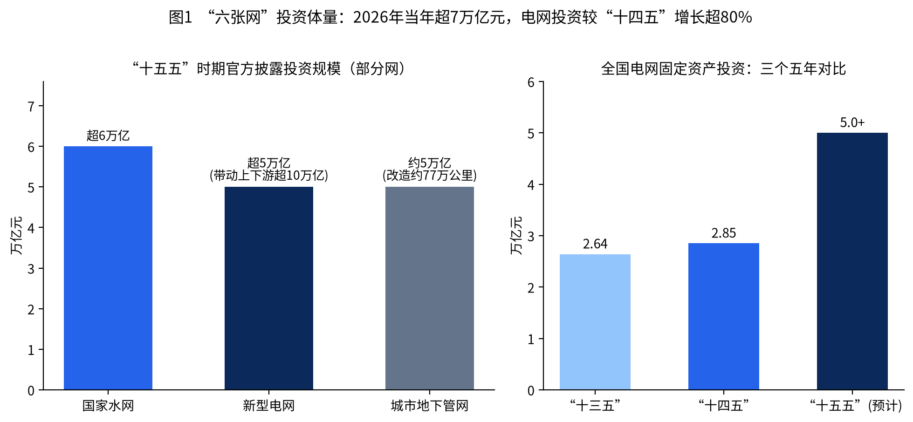
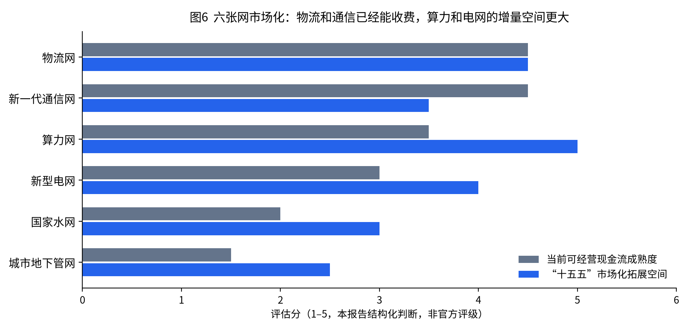
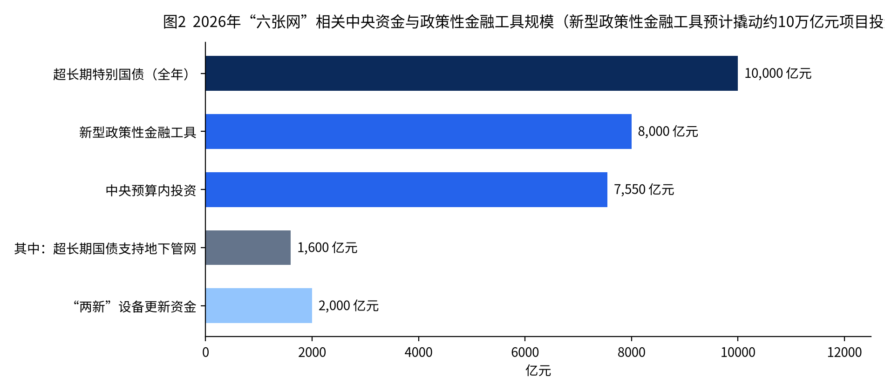
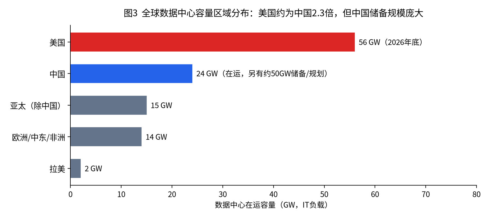
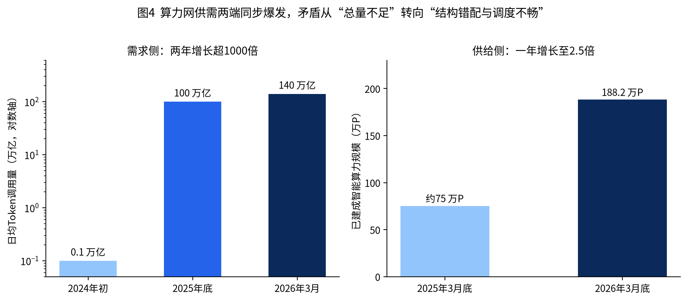
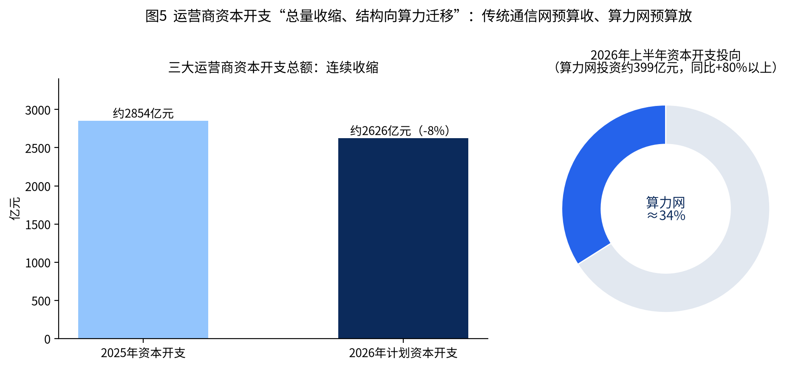
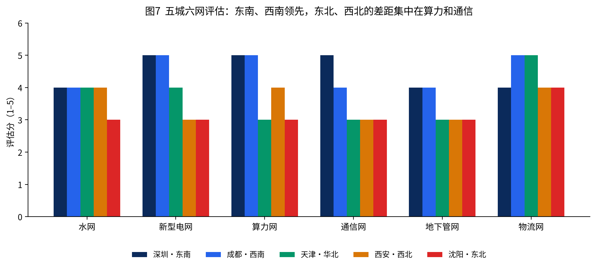
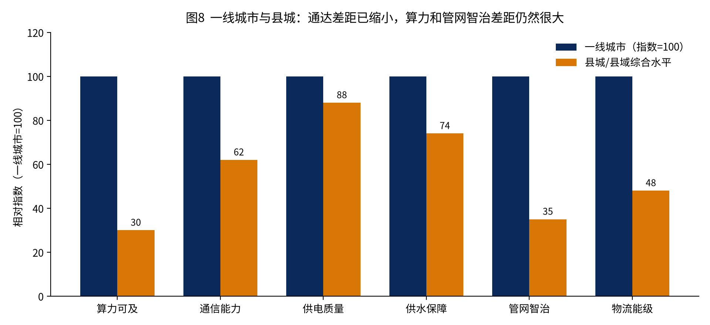

“六张网”是“十五五”时期现代化基础设施体系建设的核心载体，指水网、新型电网、算力网、新一代通信网、城市地下管网、物流网六大基础设施网络。其政策演进在2026年呈现出罕见的密集节奏：
清华大学中国发展规划研究院常务副院长董煜指出，“六张网”是“十五五”规划提出的重大工程、重大建设任务，既是传统基础设施补短板重点，也是新型基础设施建设的发力点。从“铁公基”到“六张网”，标志着中国基建主战场的正式切换：从交通物理连通转向融合数字、智能、绿色与安全的“织网”时代。
| 网络 | 内涵与功能定位 | 现状基础（2025年底） | “十五五”目标与重点 |
|---|---|---|---|
| 国家水网 | 联通江河湖库、城乡供排水系统，集水资源调配、水安全保障、水生态保护于一体；粮食安全与城市安全的生命线 | 已建成世界规模最大的水利基础设施体系，基本完成“搭骨架”；2026年上半年水利投资5151亿元，新开工25项重大工程（总投资2646亿元） | 投资超6万亿元，新增300多万就业岗位；防洪减灾、重大引调水、供水灌溉三大方向；引江补汉、三峡水运新通道等标志性工程；从“搭骨架”进入“织水网、强系统” |
| 新型电网 | 以绿色能源技术创新为引领，推进源网荷储一体化、多能互补，建成安全可靠、绿色低碳、坚强韧性、智能灵活的电力网络 | “十四五”电网投资2.85万亿元；新能源成为第一大装机电源；云霄直流首次开展输电权市场化交易（2026年6月） | 投资超5万亿元（国网4万亿+南网约1万亿），较“十四五”增长超80%；新投产约15回特高压直流，西电东送超4.2亿千瓦；2030年初步建成“主干电网+配电网+智能微电网”新型电网平台，非化石能源发电量占比50% |
| 算力网 | 以国家算力枢纽、数据中心集群、智能算力节点、算力调度平台为载体，联通东中西部算力资源的全国一体化算力网 | “8+10+3”布局（8大枢纽、10个集群、3个算电协同发展区域）；2026年3月底智算规模188.2万P，为上年同期2.5倍；145条干线光缆，枢纽间时延<20ms；42个万卡集群 | 纳入规划纲要109项重大工程；建设新一代超算、通算、智算设施体系；建设算力监测调度平台；“东数西算”、全国一体化监测调度、算电协同、边缘算力四大方面 |
| 新一代通信网 | 以5G-A、6G、万兆光网、卫星互联网为重点，构建空天地海一体化、通感算智融合的网络设施体系 | 5G基站510.2万个（全球60%以上）；5G-A覆盖330余城市；10G PON端口3286万个；光缆7499万公里；6G完成第一阶段技术试验，批复6GHz试验频率 | 建设5G-A基站50万个、50G PON端口100万个；推进万兆光网部署；“适时启动6G商用”，2029年形成自主6G技术方案；GW星座、千帆星座加速组网（2027年全球覆盖） |
| 城市地下管网 | 供水、排水、燃气、热力、电力、通信、综合管廊等地下管线更新改造与优化升级，从“被动响应”转向“主动感知” | 管网总长近390万公里（燃气104万、供水119.9万、排水99.4万、热力54.6万公里），居世界首位，但大量建于上世纪80—90年代 | 投资约5万亿元，建设改造约77万公里（燃气20万、排水17.5万、供水17.5万、污水10万、供热12万公里）；年均带动就业约280万人；智慧化监测与“一张图”平台 |
| 物流网 | 物流枢纽节点、骨干通道、装备载具、规则标准、信息数据有机融合的跨区域、跨领域综合服务系统 | “四横五纵”大通道；181个国家物流枢纽、105个骨干冷链基地、2700余家规模以上物流园区；2025年社会物流总费用/GDP降至13.9% | 印发现代物流领域“十五五”专项规划；2027年物流费用率降至13.5%左右；2030年基本建成“枢纽与产业协同、通道内外联通、设施绿色智能、规则全域互通”的物流网 |
六张网可以按功能分为两类。第一类是基础设施补短板的三张网——水网、城市地下管网、物流网。它们的共同特征是存量规模已居世界首位，但在系统性、韧性、效率上存在历史“欠账”：水运体系尚未成网、多式联运比重偏低；管网老化、供水漏损、排水能力不足；社会物流总费用率仍高于发达国家。第二类是开新局、孕育未来产业的三张网——新型电网、新一代通信网、算力网。它们直接对应人工智能与能源转型两条产业主线，决定国际科技竞争的制高点。
（1）从“单网建设”走向“多网协同”。国务院发展研究中心魏际刚提出“一张网”协同推进格局：在国土空间规划中统筹各网建设空间，推广“多杆合一”“多井合一”“廊道共享”；地下管网更新须与通信光纤敷设、电网电缆入地同步实施；制定跨网数据接口与互联互通标准，让“水网传感数据经通信网上传算力网处理”。湖北、四川宜宾等地已探索“一张网、一分管领导、一牵头部门、一工作专班”的运行模式。
（2）从“硬投资”走向“硬投资+软建设”。以算力网为例，建设枢纽集群是“硬功夫”，而算力如何监测、怎么定价、如何撮合买卖双方则是“软机制”。国家发展改革委明确“十五五”将“强化算力资源监测与市场化调度”，并在电网领域推进输电权交易、容量电价、绿电直连等价格机制改革。
（3）从“政府主导”走向“政府引导、市场主导、多元参与”。传统基建依赖财政投入，而“六张网”体量巨大、周期漫长，必须打开社会资本通道。南京都市圈“六张网”机会清单152个项目中31个向社会资本释放超200亿元投资需求；国家发展改革委推动“梳理一批具有吸引力的工程项目向社会公开推介”。
（4）从“规模扩张”走向“效能与安全并重”。2026年既是开局之年，也可能是投资强度高点（中信建投观点）。此后竞争焦点将转向利用率、单位成本（如单Token成本）、网络韧性与安全（“端边网云”防护、量子加密、平急两用设施）。
（5）区域格局分化。国泰海通分析显示，东部侧重电网与通信提质，中西部聚焦水网与算力布局，边疆地区强化水运与口岸联通。广东“全方位铺开”（“十五五”谋划基础设施重大工程投资8万亿元）、浙江“精准爆破”（新型电网与算力）、南京都市圈“抱团分工”、河南“新旧两手抓”构成四种典型地方模式。

据国家发展改革委初步估算，2026年“六张网”及相关重点领域建设投资规模超7万亿元。长江证券预估“十五五”六张网总投资约26.9万亿元，年均约5.4万亿元，较“十四五”增长约21%。机构测算传统基建乘数效应约1.5倍，而“六张网”约为其2倍，即1万亿元六张网投资可带动约3万亿元GDP。2026年上半年数据已显现拉动：互联网和相关服务业投资同比增长39.9%，水上运输业投资增长19.8%，电力供应业投资增长19.4%。
水网“十五五”预计吸纳约315万人就业；城市地下管网年均带动就业约280万人；三张新网每张预计带来百万量级岗位，并催生电力聚合运营员、算力基础设施运维人员、人工智能训练师等新职业。
“六张网”不仅是传统基建升级，更是新技术、新业态的孕育载体：新型电网融合虚拟电厂、车网互动；算力网与通信网支撑大模型与工业互联网；物流网推动无人仓、智慧供应链；水网与管网数字化为数字孪生、物联感知提供场景。测算显示，算力指数每提升1个百分点，可拉动数字经济增长约3.3‰、GDP增长约1.8‰。
“东数西算”实现算力全域调度；新型电网匹配西部绿电与东部负荷，“能源基地”变“价值高地”；物流网降低全社会流通成本（物流费用率每下降0.1个百分点节省社会成本超千亿元）；通信网广覆盖弥合数字鸿沟。六网协同推动能源流、数据流、物质流精准匹配，降低交易成本、物流成本与环境成本。
“六张网”收益的核心逻辑是“使用者付费 + 运营服务 + 资产证券化”，但六张网的公益属性与市场化程度差异显著，需要分类设计。
| 网络 | 主要运营主体 | 直接收益来源 | 定价/回报机制 | 资产证券化与退出 |
|---|---|---|---|---|
| 新型电网 | 国家电网、南方电网、内蒙古电力（受严格监管，强化公共基础设施属性）；智能微电网具独立市场主体地位 | 输配电费；跨省跨区专项工程输电费；容量电费；输电权交易收入（云霄直流限价0.0256—0.1元/度）；增量配电、综合能源、虚拟电厂服务 | 第四监管周期输配电价（2026年8月1日起执行）：准许收益=有效资产×准许收益率，权益收益率原则上不超10年期国债收益率+4个百分点；容量电价“保底工资”机制分类完善 | 电网企业债券；储能、抽蓄资产REITs探索；绿色债券 |
| 算力网 | 公有云厂商、电信运营商、第三方IDC、地方国资算力平台四大阵营 | 基础算力租赁（2026Q1市场规模680亿元、同比+62%，全年预计超2600亿元）；分层算力订阅；GaaS按Token计费（上海电信1元=25万额度点；上海移动1元=40万Tokens）；行业专属算力定制 | 市场化定价，政府以“算力券”补贴需求侧；价值从“芯片差价”向“调度溢价”、从“机柜租金”向“Token分成”迁移 | 数据中心REITs首批（润泽科技、万国数据）2025年获批，均为民间投资项目；产权类REITs分派率门槛3.8% |
| 新一代通信网 | 三大基础电信运营商、中国广电、中国星网、上海垣信（千帆） | 个人与家庭通信服务；5G专网（2026年预计收入2361亿元，2021—2026年CAGR 108%）；行业数字化解决方案；卫星互联网服务 | 市场竞争定价；5G“不亏且有正向现金流”，但前期投资尚未完全收回；运营商资本开支向算力倾斜 | 运营商上市融资；铁塔共享模式；卫星星座引入国资与社会资本 |
| 国家水网 | 水利部直属工程单位、流域公司（如南水北调集团）、省级水网公司、县域水务特许经营者 | 供水水费（国家发展改革委核定南水北调中线干线供水价格）；水力发电；水权交易、新增耕地指标交易、水土保持碳汇；文旅综合收益 | 政府定价+两部制水价改革；投建运一体化、管养分离；PPP新机制（国办函〔2023〕115号）下的特许经营 | 3个水利REITs项目申报中（拟发行56.24亿元）；原水收费收益权ABS、水务不动产ABS；2026年上半年水利落实专项债、贷款、社会资本2580亿元 |
| 城市地下管网 | 城投公司、燃气/供水/热力公用事业企业、综合管廊特许经营者 | 入廊费+日常维护费（综合管廊）；水价、气价、热价联动；“综合管廊+商业运营” | 使用者付费+财政补贴（可持续性是核心难点）；专项债捆绑道路改造、片区更新打包 | 供水、污水厂网一体化REITs探索；超长期特别国债2026年定向支持1600亿元 |
| 物流网 | 国家物流枢纽运营企业、港口航道集团、快递物流企业、冷链基地运营方 | 仓储租金、装卸作业、多式联运服务、供应链金融、航道通行费（三峡水运新通道年航运效益约164亿元） | 市场定价为主；“政企共建同营”“企业投资+政府补贴+运营分成” | 仓储物流REITs已较成熟（现金流稳定但区域分化）；物流枢纽专项债 |
2026年6月1日，连接国家电网与南方电网的云霄直流启动我国首次输电权市场化交易。输电权即在特定时段、方向、容量范围内使用输电通道的权利，通过市场竞价决定“谁能用、用多少”，为输电通道建设成本回收提供新路径。首笔交易预成交安徽送广东2116万千瓦时（含绿电1607万千瓦时），113家经营主体参与申报；购电方支付的输电权费用全部用于抵充闽粤两省容量电费，预计每年为两省工商业用户减负约5000万元。国家发展改革委表示将“适时向其他跨省跨区通道推广”。
日均Token调用量从2024年初的1000亿跃升至2026年3月的140万亿，两年增长超1000倍。三大运营商率先推出Token资费套餐，计费由“卖机柜”转向“卖词元”。国金证券研究认为，利润与估值逻辑随之迁移：价值分配重心从上游硬件转向中游调度运营与下游应用；估值锚从机柜规模、GPU库存转向算力利用率、Token产出能力、调度技术与合规资质。但Token计量口径不统一、跨平台结算不健全、政企客户预算体系仍适配硬件采购，标准化定价体系仍需长期完善。
2026年初国家发展改革委、国家能源局完善发电侧容量电价机制：煤电、气电、抽水蓄能、新型储能分类完善，电网侧独立新型储能可“结合放电时长和顶峰时贡献等因素”建立容量电价；适时建立可靠容量补偿机制，条件成熟后探索容量市场。“十五五”全国新增可承担顶峰保供作用的电网侧独立储能约8000万千瓦、等效顶峰时长力争4小时，2030年达到1.4亿千瓦；虚拟电厂最大调节能力2030年超5000万千瓦。
截至2025年中，国家发展改革委已推荐92个REITs项目、70个上市，发售基金总额1794亿元，预计带动新项目投资超1万亿元。发改委236号文分类调整收益门槛：特许经营权、经营收益权类项目存续期IRR原则上不低于5%；非特许经营类（产权类）未来3年净现金流分派率不低于3.8%。数据中心、高标仓、储能设施等具备稳定现金流的六张网资产成为REITs扩围重点。
市场化空间指“十五五”期间能够形成可预期现金流、从而吸引贷款、股权和REITs的程度。它和“现在能不能收费”不是一回事。本报告用两个1–5分指标分开看：当前可经营现金流成熟度，以及未来五年还能打开的空间。分数是结构化判断，不是官方评级。

| 网络 | 成熟度 | 拓展空间 | 判断依据与约束 |
|---|---|---|---|
| 物流网 | 4.5 | 4.5 | 仓储租金、装卸和快递价格已经市场化，仓储物流REITs有成交。空间在多式联运“一单制”、冷链和枢纽与产业的绑定。铁路专用线进港比例约50%，衔接效率仍限制网络收益。 |
| 新一代通信网 | 4.5 | 3.5 | 三大运营商已能以用户和专网收费覆盖经营现金流，5G专网2026年预计收入2361亿元。个人市场渗透率接近七成，资本开支总量在下降。增量在5G-A行业场景和卫星，6G尚不能计入当期收益。 |
| 算力网 | 3.5 | 5.0 | 机柜租赁2026年一季度已达680亿元，Token套餐开始出现，数据中心REITs完成首批注册。空间最大，因为需求仍在爆发。约束是西部上架率、异构生态和跨省结算，没有调度能力的主体很难把空间变成利润。 |
| 新型电网 | 3.0 | 4.0 | 主干网是受监管的自然垄断，回报由输配电价锁定，本身不是充分竞争市场。可经营增量在虚拟电厂、独立储能、增量配电、绿电直连和输电权。深圳虚拟电厂实时可调节能力已达150万千瓦，说明负荷侧市场已经起步。 |
| 国家水网 | 2.0 | 3.0 | 骨干调水、防洪仍以中央资金和专项债为主。“十四五”水利投资中，专项债、贷款和社会资本合计约占36%，中央财政约占64%。可经营部分是城乡供水、污水处理、发电和水权。水价调整慢，是空间打不开的主因。 |
| 城市地下管网 | 1.5 | 2.5 | 燃气、供水、供热有收费，排水和老旧管网改造的直接付费意愿弱。综合管廊“入廊费+维护费”在多数城市收不抵支。现实路径是厂网一体打包、与道路更新捆绑专项债，以及超长期特别国债（2026年1600亿元）托底，再把有收费的供水污水资产做成REITs。 |
国家发展改革委推动各牵头部门和地方加快建设“六张网”项目库，将项目纳入国家重大建设项目库，并建立“实施一批、前期一批、储备一批”的滚动推进机制。地方层面形成多种制度化安排：
| 工具 | 2026年规模 | 功能定位 | 对六张网的适配 |
|---|---|---|---|
| 中央预算内投资 | 7550亿元 | 中央财政安排的建设资金，以直接投资为主，辅以资本金注入、投资补助、贷款贴息；投向公益性、基础性领域，发挥引导托底作用 | 水网、地下管网、边疆通信普遍服务等公益性项目 |
| 超长期特别国债 | 1万亿元（其中8000亿元用于“两重”建设） | 中央举债、期限长成本低、不计入赤字，服务国家中长期战略 | 国家水网骨干工程；地下管网2026年安排1600亿元（较上年增加250亿元）；6月底前基本下达完毕 |
| 新型政策性金融工具 | 8000亿元（2025年为5000亿元） | 由国开行、农发行、进出口行募资，经专门工具公司以股权投资、股东借款方式补充项目资本金，“填补其他三类资金都不直接对症的环节”；2025年5000亿元撬动项目总投资超7万亿元（约14倍），本轮预计撬动约10万亿元 | 重点投向新质生产力与“六张网”；9月起在四川、浙江、湖北等地陆续投放；国开行重点支持基础设施、制造业 |
| 地方政府专项债 | 单列并提高用于项目建设的额度 | 要求项目收益自平衡、以专项收入偿还，支持有一定收益的公益性项目 | 水利、管网改造（捆绑道路/片区更新）、物流枢纽等 |
| 基础设施REITs | 常态化发行 | 盘活存量资产，回收资金投入新项目 | 数据中心、仓储物流、水利、储能、管网一体化资产 |
| 绿色金融与产业基金 | — | 绿色债券、碳减排支持工具、产业投资基金吸引长期资本 | 算电协同、零碳园区、关键装备与跨网融合示范工程 |

国家发展改革委要求“加强与金融机构的信息共享，实现高效投贷联动”，推动工具资金与政策性银行中长期贷款、商业银行配套融资同步审批、同步投放。湖北省2026年9月12日召开“六张网”重大项目投融资对接会，首批向金融机构推介431个重大项目，总投资4660亿元、融资需求2811亿元；国开行已支持三峡水运新通道配套设施、武汉超算中心等项目，“六张网”项目贷款余额164亿元；交通银行近两年信贷支持“六张网”项目融资1200亿元；湖北银行累计投放超150亿元。
| 改革文件/机制 | 核心内容 | 对六张网收益的影响 |
|---|---|---|
| 输配电价第四监管周期（发改价格〔2026〕1077号） | 2026年8月1日起执行省级电网输配电价、区域电网输电价格；按1490号文定价办法核定准许收益 | 锁定电网投资回报预期，支撑5万亿元电网投资 |
| 新能源全面入市（136号文） | 新能源上网电价全面由市场形成，建立“机制电价”差价结算 | 绿电价格信号真实化，但跨区需求拉动需依赖绿证/碳市场 |
| 绿电直连（688号文） | 为集中式新能源开辟独立于公共电网的就近消纳通道 | 算力中心“绿电直供”（如阳江海底算力中心）获得制度依据 |
| 分布式承载力评估标准（DL/T 2041-2025） | 2026年6月生效，废除80%反向负载率红线，建立绿/黄/红分区综合承载力评估 | 释放分布式新能源与配网改造、储能配置空间 |
| 容量电价完善与可靠容量补偿 | 分类完善煤电、气电、抽蓄、新型储能容量电价；探索容量市场 | 调节性资源获得“保底工资”，支撑储能、抽蓄投资 |
| 输电权市场化交易 | 云霄直流试点，季度释放剩余容量，限价0.0256—0.1元/度 | 输电通道资产效能激活，成本回收新路径 |
| 普惠算力专项行动（工信部，2026年4月） | 探索“算力银行”“算力超市”，支持中小企业存入闲置算力、跨区域跨周期调度 | 提升存量算力利用率，培育算力交易市场 |
| 水价改革与投建运一体化 | 核定南水北调中线干线供水价格；推进重大水利工程投建运一体化、管养分离 | 水务资产价值重估，REITs与ABS通道打开 |
| REITs新规（发改委236号文） | 特许经营类IRR≥5%、产权类分派率≥3.8% | 差异化门槛更贴合六张网不同资产风险收益特征 |
投贷联动在这里不是商业银行内部“股权+债权”的狭义产品，而是政府投资、政策性资本金和银行贷款绑在同一个项目节奏上。国家发展改革委在2026年9月3日的协调机制会上把它概括为三件事：项目库与金融机构信息共享、有吸引力的项目公开推介、政府投资撬动的同时把价费和商业模式补上。
| 环节 | 已公开的做法 |
|---|---|
| 资本金先到位 | 新型政策性金融工具以股东借款或股权方式补项目资本金。2025年5000亿元撬动项目总投资超过7万亿元。工具资金与政策性银行中长期贷款、商业银行配套融资要求同步审批、同步投放，减少“资本金到了、贷款还没跟上”。 |
| 银行前置介入 | 湖北明确把“银行前置介入”作为后续跟踪重点，而不是项目开工后再拿报表找银行。国开行对山东招远核电的做法是工具资金叠加规划贷款、前期贷款和中长期贷款，按建设阶段匹配，可作为六张网项目的参照。 |
| 一网一策的产品 | 湖北要求按各网的建设周期和现金流设计产品。经营性的算力、物流、有电价的储能，适合项目贷款和REITs退出；公益性的水网骨干和排水管网，适合国债、预算内投资加贴息，贷款只覆盖有收费的部分。 |
| 跨网现金流 | 同一厂址上的算力、变电站和通信节点可以共用土地和电力接入。湖北提出用多网融通带来的多元收入，把单一项目的现金流做厚，提高贷款覆盖率。深圳南山妈湾电厂改数据中心、罗湖洪湖水质净化厂“上园下厂”，是这种打包的实物形态。 |
| 中央层面的协同接口 | 2026年8月19日，国家发展改革委建立算力网、新型电网、新一代通信网“2+3+N”协调机制：2家电网企业、3家基础电信运营商、N家算力企业共同推进重大项目。这是三张新网的产业协同机制，和湖北的政银企对接机制是两条线，分别解决“谁来建”和“钱怎么配”。 |
已落地的资金量级：湖北国开行“六张网”贷款余额164亿元，交通银行近两年信贷支持1200亿元，湖北银行累计投放超过150亿元。全国层面还没有公布六张网贷款余额，地方案例目前是观察投贷联动是否跑通的主要证据。
两套机制都来自湖北省2026年的公开部署，职责不同。“五个一”管政府内部谁负责，“1+1+6+N”管项目怎么对上银行。同期还有一套政策文本架构，叫“1个工作指引+6个实施方案”。
| 五项 | 作用 | 容易出现的问题 |
|---|---|---|
| 一位分管副省长领衔 | 跨厅局事项有政治责任人，避免发改、水利、能源、通信各报各的。 | 副省长同时分管的事项很多，领衔若没有月度调度，会停在会议名单上。 |
| 一个厅局牵头 | 每张网有日常责任部门，对接国家部委的渠道是清楚的。 | 一张网一个厅局，本身会强化条块分割。多网协同若没有第二个机制，五个一解决不了“同沟同井”。 |
| 一份实施方案 | 对应国家即将出台的分网规划，把目标拆到本省。 | 湖北8月的推进会仍在要求按“1个工作指引+6个实施方案”加快编制，说明清单可以先有，方案可能后到。 |
| 一个年度重点工作任务 | 把五年目标压成当年开工、投资和要素清单。 | 年度任务若只考核开工个数，会回到“重建设、轻上架率和漏损率”。 |
| 一张项目清单 | 湖北首批清单431个项目、总投资4660亿元、融资需求2811亿元，融资需求约占投资的60%。 | 清单是对接银行的入口，也是最容易膨胀的一环。没有收益平衡审查的项目进了清单，会占用银行授信额度。 |
成都用的是同一思路的市级版本：“一张网、一分管市领导、一牵头部门、一工作专班”，已储备1262个项目、计划总投资7128.4亿元。陕西的提法是“一网一专班”，并加上场景征集。五个一不是湖北专利，而是地方把国家协调机制翻译成可执行责任的共同模板。
省级公开稿确认了机制名称、9月12日对接会的参会范围和四项工作要求，没有逐字定义四个数字。结合同期“1个工作指引+6个实施方案”和参会单位，本报告作如下结构理解，并标明这是根据会议信息作出的归纳，不是条例条文：
会议对这个机制提了四条操作要求：信息共享、投贷联动；用跨网收益把现金流做厚；一网一策设计金融产品；对融资堵点实行包保和通报。这四条比名称本身更重要。若只开会推介、没有包保和后续销号，1+1+6+N会退化成项目路演。
以下案例按六张网及“多网协同”分类选取，兼顾国家级标志性工程、算电协同创新模式与地方制度创新。
换流站海拔最高达5300米，将西藏清洁电能跨越2681公里送至广东，输送时间仅9毫秒。作为“十五五”新投产15回特高压直流的代表，体现“沙戈荒”与西南清洁能源基地外送格局。
国网在甘浙工程率先应用两端单站全柔直方案，单站容量从5GW突破至8GW，标志柔直技术“从能做到大规模商用”。此后南疆—川渝、巴丹吉林—川渝等项目跟进。浙江同期落子世界首条送受两端均采用柔直技术的跨区特高压及国内投资最高的特高压交流工程。
全国首次输电权市场化交易（详见2.3节），被业界称为“电力体制改革进入深水区的标志”。
国内首个“绿电拼车”模式的海上风电送出工程预计2026年10月投产，每年向大湾区输送清洁电能约60亿千瓦时，解决多个海上风电场共用送出通道的问题。
将算力中心沉入海底数十米：一是利用阳江千万千瓦级海上风电基地实现绿电直供；二是依托海水自然冷却，能效较传统数据中心提升30%以上。被视为“打造算电协同新模式”的样本，未来目标是全球领先的海洋算力产业基地。
河南以郑州为核心构建“一核四极多点”算力布局，郑州国家超算互联网核心节点已建成投运，并与甘肃庆阳、新疆哈密共建跨区域协作样板，验证东部需求与西部绿电、土地、气候资源的对接路径。
液冷单池算力规模3760 PFLOPS，芯片、服务器、高速互联网络等核心硬件均采用国内信创厂商产品，核心环节国产化率100%，验证“绑定国家算力枢纽、布局液冷高密算力、全链条国产化”的发展路径。
怀来官厅湖畔新建机房高密度机柜算力约为传统机柜10倍；韶关大规模全液冷智算中心完工，体现粤港澳枢纽节点的绿色高密方向。
国内首个Pre6G试验网在南京投入运行，系统能力跃升10倍；紫金山实验室搭建全球首个6G通智感融合外场试验网。中国电信完成业界首个面向6G的高轨+中轨卫星协同组网试验，切换时延从300多毫秒降至26毫秒。
10平方公里全域5G-A连续覆盖，上行峰值约1Gbps，智能导游机器人、配送机器狗常态化上岗；中国电信依托5G-A通感一体构建“1+1+4+N”低空经济能力体系，在60余座城市落地千余个场景。
“十五五”开工的首个国家重大标志性工程（2026年6月8日开工）。建成后万吨级船舶可直抵西南腹地，每年航运效益约164亿元；建设期拉动水泥、钢材、工程机械等产业链。
新中国成立以来首条通江达海的大运河，全长134.2公里，可满足5000吨级船舶江海直达；2026年6月3日全线通水，9月通航。
主隧洞累计掘进超29公里，194.7公里管道建成后将使南水北调中线年调水量从95亿立方米增至115.1亿立方米。
全球首个直达机场空侧的跨境海空联运模式，货物最快14小时从“工厂门”到“机舱门”；2026年一季度新能源重卡销量同比增长45%。
青岛采用非开挖技术让老旧管线原地“焕新”；重庆布设智慧感知终端，实现从被动抢修到主动预警；南阳完成2000余公里存量供排水管网全面普查，为“一张图”平台奠定数据基础。
算力网支撑AI研发“一小时出图”；通信网串联上百道工序，单班产能提升24%；物流网实现物料按需送达；新型电网、水网、地下管网托底绿色能源与水循环——传统工厂同步实现高端化、智能化、绿色化转型。
152个项目、总投资2962亿元，南京主攻算力网Token工厂、6G“空地智联”；芜湖智慧水务、淮安风电直联制氢、镇江算力服务一体化、金坛盐穴储能、宣城低空物流。预计带动融资近2000亿元、年采购超300亿元、吸纳就业超8万人、涉及供应商超3000家。
首批推介431个项目、融资需求2811亿元，建立“五个一”与“1+1+6+N”机制，研究制定“六张网”协同建设实施方案。
四国均无“六张网”的整体概念，但在电网、算力、通信、水务、管网、物流各领域有成熟的市场化运营制度与近期的转型实践。本章先给出总览，再分国家分析发展水平、市场化运营方式、可借鉴之处及其自身问题，最后归纳中国的差距。
| 维度 | 中国 | 美国 | 德国 | 日本 | 韩国 |
|---|---|---|---|---|---|
| 电网 | 两大电网公司垂直一体化、受监管；“十五五”投资超5万亿元；特高压全球领先；输电权交易起步 | 3000余家公用事业，RTO/ISO市场化调度；PJM容量价格触$325/MW-day上限，6.8GW备用缺口；大负荷接入排队 | 4家TSO（50Hertz、Amprion、TenneT、TransnetBW）；NEP 2037/2045投资需求3650—3920亿欧元；网费2026年靠65亿欧元补贴压降57% | 10家一般送配电公司，OCCTO广域协调；2050骨干电网强化6—7万亿日元，北海道—东京6—8GW HVDC | KEPCO垄断、巨额负债；345kV线路标准工期9年；湖南地区205座变电站饱和、新能源接入受限至2031年 |
| 算力 | 在运约24GW（另约50GW储备/规划）；智算188.2万P；枢纽时延<20ms；国产芯片占出货41% | 56GW（2026年底），占全球约43%耗电；掌握约75%前沿AI算力；四大云商2026年资本开支超7000亿美元；Stargate 10GW+ | 约5.5GW、529个数据中心（欧洲第一），法兰克福等地受电网容量约束；2026年4月起“成熟度优先”接入分配 | 约1.7GW；2050年数据中心用电140TWh，61%集中东京；“瓦特—比特协同”推动分散布局 | 国家AI算力中心（海南郡，2028年1.5万张AI芯片）；AIDC特别法2027年3月生效；9.58GW接电申请待批 |
| 通信 | 5G基站510万个（全球60%+）；5G-A 330余城市；6G第一阶段试验完成；GW/千帆星座组网中 | 5G覆盖广但中频谱不足；宽带ASCE评级C+；Starlink全球领先卫星互联网 | 千兆光纤到户覆盖39.8%（2024年底），目标2030年全覆盖；农村5G覆盖滞后 | NTT IOWN全光网络（APN）；6G白皮书与Beyond 5G推进 | 光纤占固定宽带90.5%（OECD第一）；5G用户占比55%；6G预商用目标2028年 |
| 水网与管网 | 管网近390万公里居世界首位，但老化严重；“十五五”改造77万公里 | 饮用水C-、废水D+、堤坝D；2024—2033年饮用水资金缺口3090亿美元、废水及雨水缺口6900亿美元 | 漏损率欧洲最低之一；市政公用事业（Stadtwerke）模式成熟 | 22%水管超40年法定耐用年数（2042年达约7成）；更新率仅0.64%/年；八潮市道路塌陷事故 | 供水普及高；首都圈数据中心用水与电力双重约束 |
| 物流 | 物流费用率13.9%（2025年）；港口集装箱作业区铁路专用线接入仅约50% | 物流成本占GDP 7.8%（2025年，2.4万亿美元）；港口评级B、铁路B- | 欧洲物流枢纽；LPI长期全球前列 | “2024年问题”：卡车司机工时上限引发运力短缺与运费上涨 | 电商物流高度发达；物流自动化领先 |

美国是全球数据中心第一大国：2026年底容量56GW，数据中心耗电占全国6%，掌握约75%的全球前沿AI算力。四大云厂商2026年资本开支指引合计超7000亿美元（AWS约2000亿、微软约1900亿、Alphabet 1800—1900亿、Meta 1250—1450亿美元）；Meta路易斯安那Hyperion园区规划达5GW，OpenAI Stargate目标10GW以上。但基础设施整体评级仅为C（ASCE 2025），能源D+，饮用水C-，雨水与公交D，2024—2033年总资金缺口3.7万亿美元。
美国的核心矛盾是“算力扩张速度远超电网建设速度”：输电规划碎片化、州际协调困难、新建高压线路审批动辄十年；容量价格飙升引发居民电价上涨争议；FERC与州权边界之争导致PJM改革方案反复。相较之下，中国“集中规划+两大电网统一建设”在跨区输电通道（特高压）建设速度上明显领先，但在价格发现、容量稀缺性定价与第三方公平接入上落后于美国。
德国是欧洲数据中心第一大国（约5.5GW、529座数据中心），千兆光纤到户覆盖率39.8%（2024年底，目标2030年全覆盖），电网处于能源转型（Energiewende）引发的大规模重构中：四大TSO《电网发展规划2037/2045》测算到2045年新建线路约3.3万公里，陆上+海上总投资需求3650亿—3920亿欧元。
SuedLink（100亿欧元、4GW、700公里全地下直流）因地质问题暂停，2028年投运目标存疑，是能源转型最大单体项目严重拖期的缩影；全地下敷设大幅推高成本，新版NEP已转回架空线方案。德国电价与网费居欧洲高位，削弱了数据中心与制造业竞争力。中国在特高压建设速度、工程成本控制上优势明显；差距在于规划的法定程序、第三方接入的非歧视性以及公众参与机制。
日本电力需求长期平稳（2024—2034年峰值年均增速仅0.4%，用电量年均增0.6%），数据中心与半导体工厂成为少有的增量来源。OCCTO 2050电网总体规划（Master Plan）测算骨干电网强化需6—7万亿日元，核心是北海道/东北至东京的6—8GW HVDC；正在编制的第三代总体规划中，2050年数据中心用电140TWh，其中东京85TWh（61%）、关西23TWh、中部14TWh，高度集中于三大都市圈。数据中心约1.7GW，规模远小于中美。
日本约74万公里水管中22%（约17.6万公里）已超40年法定耐用年数，2042年度将达约7成；水管更新率仅0.64%/年、下水道0.15%/年；2025年1月埼玉县八潮市因下水道破损导致道路塌陷，2022年度因上下水道造成的道路塌陷达1550起。这是中国“十五五”改造77万公里地下管网的直接警示：人口下降与收费能力下降会使管网更新资金越来越难筹措，必须在财政尚有余力时加快更新。物流方面，“2024年问题”（卡车司机工时上限）导致运力短缺与运费上涨，凸显劳动力约束下多式联运与自动化的重要性。
韩国光纤占固定宽带连接90.5%、5G用户占比55%，均居OECD前列。AI算力方面，政府与三星SDS主导的财团于2026年6月成立韩国AI算力中心公司（KOACC），在全罗南道海南郡Solaseado数据中心园区建设国家AI算力中心，目标2028年部署1.5万张AI芯片，2027年先通过三星SDS数据中心提前开放部分算力。
韩国电力公社（KEPCO）截至2026年3月累计受理数据中心接电申请63.8GW，已出结果54.3GW中39.3%被判“不可供电”，仍有9.58GW未确认；首都圈供电确认周期从2—3个月拉长至约12个月。湖南地区发电能力约23.3GW、本地需求仅约5GW，却因外送通道不足反复出现系统饱和与出力限制，205座变电站被列为“系统管理变电站”，新能源接入受限至2031年；345kV线路标准工期9年，半数以上输变电项目因地方反对与许可问题延期。韩国电网困境说明：没有输电通道的算力分散政策难以落地——这恰是中国特高压与“东数西算”协同布局的相对优势。
| 领域 | 中国相对优势 | 相对差距与可借鉴点 |
|---|---|---|
| 规划与建设速度 | 集中规划、统一建设；特高压与枢纽间直连光缆建设周期短；100MW数据中心可在12个月内交付 | 规划法定程序、情景与成本效益分析（德国NEP、日本OCCTO）、公众参与透明度 |
| 价格与市场机制 | 输配电价监管周期制度化；容量电价、输电权交易起步 | 容量市场、节点电价、金融输电权（美国）；网费对终端用户的透明传导与补贴退坡安排（德国） |
| 稀缺容量分配 | 行政审批可快速保障重点项目 | “成熟度优先+保证金”（德国）、大负荷接入标准化流程与成本分摊（美国FERC）、专门立法与审批时限（韩国） |
| 算电协同 | 国家级“8+10+3”布局、绿电直连制度、西部绿电资源 | 电力—通信—数据中心三方共同规划与工作负载迁移示范（日本瓦特—比特协同）；绿电直供法定化（韩国） |
| 前沿算力 | 算力总量全球第二、增速快、国产化推进 | 前沿AI算力美国占约75%；高端芯片、HBM、CUDA生态；资本开支强度（美国四大云商超7000亿美元/年） |
| 存量资产运营 | REITs扩围、国有平台资源整合能力强 | 数据中心REIT与基础设施基金市场深度（美国）；市政公用事业综合运营（德国Stadtwerke）；管网老化预警（日本教训） |

| 分歧点 | 观点A | 观点B |
|---|---|---|
| 超节点 vs 高端芯片 | 超节点通过集群级系统调优弥补单卡性能短板，是推动算力国产化的现实路径，正从概念验证迈向规模商用 | 超节点本质是低端算力堆叠，功耗约为国外2倍、机柜占用达10倍，“人海战术”只能短期缓解；且前期为超节点配套的电力、制冷设施在高端芯片问世后面临沉没风险 |
| 集中大集群 vs 分布式/边缘 | 万卡乃至十万卡集中训练集群是前沿模型竞争的必需，西部枢纽具备绿电与土地优势 | 推理占比超60%后，低时延、靠近用户的东部分布式与边缘算力更重要；跨域数据传输成本与时延在极端场景下会抵消调度收益 |
| 国产生态路线 | “国芯+国模”全栈国产化已进入规模部署周期，政务新建项目100%国产化，大型银行核心系统完成适配 | CUDA生态近20年积累、数百万开发者；国产芯片模型移植需大规模改写与长期调参，实际吞吐折损明显，互联网、模型与IT服务行业仍以国外品牌为主 |
| 计费模式 | Token计费将成为行业标准化底座，推动“算力像水电一样按需取用” | 机柜租赁与Token订阅长期并存；统一分词计量、分级定价、跨平台结算尚未落地，政企预算体系仍适配硬件采购 |
| 市场与政府边界 | 国家发展改革委：“市场力量将起决定性作用”，政府加强统筹协调与政策引导 | “重建设、轻运营”源于以装机规模为核心考核指标，需转向利用率、Token产出等效能考核 |
国金证券提出算力网演进的三阶段路径：第一阶段“资源入网”（通过“1+M+N”节点体系标准化接入）→第二阶段“智能调度”（统一标识与调度平台实现跨域匹配）→第三阶段“市场交易”（形成算力市场化定价与交易机制）。国家层面路径：“硬投资”上探索算电协同模式（“光伏直连+风电长协”“源网荷储一体化”）、适度扩容枢纽间直连线路；“软建设”上强化算力资源监测与市场化调度。竞争焦点将从单点芯片参数转向系统效率、能源协同与资源调度，比拼单Token成本与算力效率。
| 分歧点 | 观点A | 观点B |
|---|---|---|
| 特高压集中外送 vs 分布式就地消纳 | “沙戈荒”与西南水电基地必须依靠特高压大规模外送，“十五五”新投产15回直流、跨省区输电能力达5亿千瓦 | 特高压历来“需求驱动、顺周期”；中东部已有10个省份分布式光伏渗透率超40%，再接受大量外来绿电将加剧调峰压力；跨区需求拉动需依赖绿证/碳市场而非行政配置 |
| 常规直流 vs 全柔直 | 常规直流成熟、成本低，8GW大容量输送经验丰富 | 柔直可“完全脱离常规电源直接输送新能源”，适合海上风电与高比例新能源外送；甘浙工程后单站容量已达8GW，成本劣势缩小 |
| 同步支撑：构网型储能 vs 调相机/煤电 | 构网型储能/变流器可提供惯量、调频、黑启动，是弱网支撑的技术主线 | 构网型装备仍存技术瓶颈，煤电与调相机在相当长时期仍是惯量与电压支撑主力，容量电价“保底工资”需向其倾斜 |
| 容量电价 vs 容量市场 | 行政核定容量电价简单可控，可按放电时长、顶峰贡献差异化 | 唯有市场化容量机制才能揭示真实稀缺性；美国PJM价格触顶与备用缺口显示容量市场也有失灵风险，需审慎设计 |
| 算力负荷：刚性 vs 柔性 | 数据中心对可靠性要求极高，应按刚性负荷保障供电 | 推理与训练任务具时空可迁移性，数据中心可作为柔性负荷参与需求响应，“以算促电” |
主干层：“十五五”新增15回左右特高压直流，西电东送超4.2亿千瓦，建成6个以上区域互济工程（华中—南方、华中—华东等），跨区灵活互济能力较“十四五”末扩大两倍以上。配电层：数智化升级、自愈控制与故障快速隔离、柔性互联装置、配电网—微电网—虚拟电厂三级协同。调节层：国网经营区“十五五”新增新型储能1.4亿千瓦，新投产、新开工抽蓄均超3000万千瓦，2030年在运在建抽蓄超1.2亿千瓦；虚拟电厂2030年调节能力超5000万千瓦。市场层：推广“联营不联运”、小时级绿电交易，2030年国网经营区绿电绿证交易规模8000亿千瓦时；输电权交易向其他跨省跨区通道推广。算电协同层：西部统筹算力枢纽与新能源基地协同建设，东部推动分布式算力与分布式电源、微电网、虚拟电厂协同规划。

| 分歧点 | 观点A | 观点B |
|---|---|---|
| 6G节奏：抢跑 vs 稳进 | 6G是下一代标准话语权争夺的关键筹码，应“适度超前”，加大太赫兹、智能超表面、通感算一体投入，2028年前形成初步产业链 | 5G前期投资尚未完全收回，6G预研投入产出比不确定，标准与频谱未定；5G至2035年仍可稳定盈利，6G应待2032年前后规模部署 |
| 地面网 vs 卫星网 | 卫星互联网是覆盖边疆、海洋、低空与应急场景的唯一解，星座组网窗口期有限，需加速 | 低轨卫星可视时间约10分钟、波束驻留不足1分钟，移动性管理复杂；终端成本、付费意愿、星地协同与运营商间利益分配尚未形成商业闭环 |
| 规模覆盖 vs 精准投资 | 通信网具有普遍服务属性，边疆与农村覆盖、万兆入户应继续“广覆盖” | 传统设备红利结束，运营商压降普惠型覆盖开支（中国移动通信网资本开支-20.3%），转向算力与高价值场景变现 |
| 通感一体的边界 | 5G-A通感一体化是低空经济、工业与智慧城市的关键使能技术 | 标准与跨行业协同不统一，雷达、通信、交通等行业数据孤岛与制度障碍制约规模化 |
| 算网融合的主导权 | 运营商凭借网络与枢纽资产天然成为算力网调度主体（中国移动“四算融合”） | 公有云厂商在技术栈与客户上更强，运营商算力业务高增长（算力收入+279%）但需面对折旧与利用率考验 |
近期（2026—2027年）：5G-A规模商用与ToB价值变现；万兆光网从试点转向重点城市与园区扩面；6G第二阶段技术试验；GW与千帆星座完成全球覆盖组网；海缆与国际骨干网扩容。中期（2028—2029年）：6G技术方案与终端储备形成、部省协同试点验收；卫星物联网商用；算力互联网（枢纽间直连扩容、低时延确定性网络）成型；5G-A与F5G固移融合支撑工业互联网与远程操控规模落地。远期（2030年以后）：“适时启动6G商用”，空天地海一体、通感算智融合的网络体系成熟，通信网从“连接管道”转型为“算力与智能的分发网络”。
综合来看，三网协同的瓶颈集中于三类：一是价格机制——算力负荷参与电力市场的身份与补偿、绿电直供的输配电费分摊、跨区算力调度的网络成本如何定价；二是标准与接口——跨网数据接口、算力并网与计量标准、异构芯片互联协议；三是组织与考核——各网牵头部门不同（水利部、国家能源局、国家数据局、工信部、住建部、交通运输部等），“六网协同”协调推进机制与地方“一张网一专班”的落地效果决定协同能否从文件走向工程。
国家还没有发布分省六张网指数。本章用同一套1–5分规则，对东南、西南、华北、西北、东北各选一个公开信息较完整的城市作对照，再把一线城市和县城分开看。5分表示已经同时具备国家级功能节点、在建标志性工程和市级统筹机制；3分表示有项目和规划、但还不是国家调度枢纽；1分表示公开信息停在原则表述。这是进展评估，不是竞争力排行榜。
| 城市 | 区位角色 | 2026年已能核对的进展 |
|---|---|---|
| 深圳 东南 | 超大城市、需求侧枢纽 | 全国首个市级《“六张网”规划“一张图”统筹和空间要素保障工作方案》，6方面22项任务。鹏城实验室承担中国算力网调度。2026年计划新增智能算力11 EFLOPS，实时可用智能算力目标超过80 EFLOPS。虚拟电厂可调节能力150万千瓦。南山妈湾电厂改A级数据中心，余热制冷节能约12%。 |
| 成都 西南 | 成渝国家算力枢纽、西部物流门户 | 储备项目1262个、计划总投资7128.4亿元，建立“一张网、一分管市领导、一牵头部门、一工作专班”。天府云计算中心投资20亿元、建成后3600P。阿坝—成都东1000千伏交流工程年送清洁电超过150亿千瓦时。地下综合管廊已投运约100公里，规划2030年超过1000公里。李家岩水库2026年4月下闸蓄水。 |
| 天津 华北 | 港口物流与电力受端 | 大同—怀来—天津南1000千伏交流工程天津段全面建设，承接山西电力进入京津冀。天津是南水北调东线既有受水城市，水网角色是受水和使用，不是新的水源地。物流依托港口和枢纽，能级高于本地算力。算力未进入八大国家枢纽，公开项目规模小于深圳、成都。 |
| 西安 西北 | 国家超算与跨域调度节点 | 国家超算西安中心具备万卡级调度能力。陕西入选国家算力互联互通区域节点。引汉济渭二期南干线2026年9月继续掘进，是西安用水的省级骨干。蓝田韵达西北基地每小时处理近30万件，说明物流网络已下到县域。省级机制是“一网一专班”加场景征集，市级项目总投资尚未像成都那样公开。 |
| 沈阳 东北 | 东北亚流通支点、算力追赶 | 已建成5个算力中心、合计1830P，其中华为人工智能计算中心450P，获批国家首批新一代人工智能公共算力开放创新平台。中国电信沈阳智算中心总投资7亿元、规划576 PFLOPS，2026年仍在引入外市电。规划建设生产服务型、陆港型、商贸服务型国家物流枢纽和国家中欧班列集结中心。水网和热网处在连通成网、中水回用的补短板阶段。 |

| 城市 | 相对强项 | 相对约束 |
|---|---|---|
| 北京 | 政策、标准和总部需求；算力使用侧集中。 | 本地电力和土地紧张，大型智算更多靠京津冀外溢。与首尔类似，需求在城内、电源在城外。 |
| 上海 | Token计费和算力商品化先行（上海电信、上海移动套餐）；国际通信和金融行业专属算力。 | 能耗和土地指标紧，新建智算依赖绿电和国产化比例要求。 |
| 广州 | 港口物流和湾区电力受端。2026年广州4个算力项目开工，总投资48.39亿元。 | 算力调度品牌弱于深圳鹏城实验室，水网和排水在极端降雨下仍是韧性短板。 |
| 深圳 | 六网空间统筹、算力调度、虚拟电厂和产业场景闭环。 | 本地水资源和廊道空间极端紧张，水网、管网更多是提质和腾挪，不是新建骨干水源。 |
一线城市的市场化空间也因此不同。深圳、上海适合做算力交易、虚拟电厂和行业专网的价格试点；广州适合做物流枢纽与冷链、空侧联运的经营性资产；北京适合做标准、调度规则和跨区域输电权、算力券的制度供给，而不适合再堆本地机柜。
县城不宜和深圳比总投资。全国农村自来水普及率2025年底为96%，规模化供水覆盖农村人口71%，县域统管比例72%；农村电网供电可靠率约99.9%；全国乡镇和95%的行政村已通5G。这些指标说明“有没有”的差距已经明显缩小。差距留在能力：县城几乎没有5G-A和万兆，管网缺少在线监测，算力靠远程调用。

| 类型 | 六张网的实际形态 | 适合的投融资 |
|---|---|---|
| 一线城市 | 六网同时存在，且开始在同一张国土空间图上审批。收益来自专网、算力、虚拟电厂、枢纽租金和高标准供水。 | 经营性贷款、REITs、产业基金。政府投资用于廊道和老旧管网，不用于再补贴成熟机柜。 |
| 枢纽型县城 例：西安蓝田 | 某一张网突然变厚。蓝田韵达西北基地每小时分拣近30万件，2025年数字经济产业园收发快递超过750万件，物流和电商强于本地算力和管网。 | 物流仓储可以走租金和REITs逻辑；其余五张网仍按县域公益项目打包。 |
| 一般农业县 | 水网是城乡供水一体化和漏损治理，电网是农网和分布式接入，通信是5G通达后的“信号升格”，物流是县乡村三级配送和冷链，算力不宜自建GPU集群。 | 专项债、超长期国债和县域供水特许经营。算力用远程共享和边缘小节点，避免一次性硬件投资。 |
说明：本报告数据均来自上述公开资料。26.9万亿元、乘数效应2倍、政策性金融工具撬动10万亿元为第三方测算。图6、图7、图8的分数和相对指数是本报告的结构化判断，用于比较方向，不是统计部门发布的指数。“1+1+6+N”的四项拆解依据湖北公开会议的参会单位和工作要求归纳，省级文件并未在公开稿中逐项定义。国际数据中心容量口径不同，只作趋势比较。